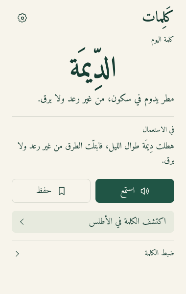

إضافة صغيرة لمساحةٍ أوسع في لغتك
كلمةٌ اليوم،
أثرٌ يبقى.
اكتشف كلمة عربية بمعناها ومثالها، واحفظ ما يلفتك لتعود إليه. لحظة هادئة في يومك، من متصفحك.

اطّلع على أحدث إصدار
اقرأها على مهل.
واحتفظ بما يستحق.
افتح الإضافة حين يناسبك. تبدأ بكلمة اليوم، ثم تختار ما تريد أن تأخذه معك.
كلمة، ومعنى، وسياق
تجد كلمة عربية مع شرحها ومثال لاستخدامها. استمع إلى نطقها إذا توفر صوت عربي على جهازك.
أطلسك الخاص
احفظ الكلمات التي تود العودة إليها. يجمعها الأطلس في مكان واحد داخل الإضافة.
عودةٌ تثبّت المعنى
حين ترغب، جرّب الاسترجاع قبل كشف المعنى. المراجعة اختيارية، ولك أن تكتفي بكلمة اليوم.
دع للعربية
مكانًا في يومك.
ثبّت كَلِمات، ثم افتحها من شريط الإضافات.
يمكنك تثبيت أيقونتها لتبقى في متناولك.
أسئلة في محلّها.
تفاصيل صغيرة لتعرف كيف تعمل كَلِمات، وأين تبقى بياناتك.
هل أحتاج إلى حساب أو اتصال دائم؟
لا تحتاج إلى حساب. تحتاج نسخة التطوير إلى اتصال وإذن المصادر لاكتشاف كلمات جديدة. تبقى الكلمات السابقة والمحفوظة متاحة دون اتصال؛ إذا لم تتوفر كلمة مكتشفة مخزنة، نوضح أن كلمة جديدة غير متاحة. تختلف نسخة المتجر الحالية.
لماذا قد لا أسمع النطق؟
تستخدم الإضافة الأصوات المتاحة عبر المتصفح والجهاز. قد تحتاج إلى إضافة صوت عربي في إعدادات نظامك، وقد لا تتوفر ميزة النطق في بعض البيئات.
ماذا عن المصادر الخارجية والخصوصية؟
تتضمن النسخة قيد التطوير تجربة مصادر خارجية اختيارية، وهي غير منشورة بعد. تعرّف على سلوكها وطلبات الاتصال في سياسة الخصوصية.
أين كلماتي المحفوظة في الموقع السابق؟
بيانات الموقع والإضافة منفصلة، ولا تنتقل تلقائيًا بينهما. يمكنك فتح الموقع السابق من المتصفح نفسه للوصول إلى بياناتك وتصديرها. ويمكنك أيضًا زيارة صفحة كلمة اليوم القديمة.
هل الصورة مطابقة لما سأثبّته؟
الصورة تعرض نسخة التطوير الحالية. قد تتأخر نسخة متجر Chrome عن آخر تغييرات المشروع. راجع ملاحظات أحدث إصدار لمعرفة ما يتوفر فيه.